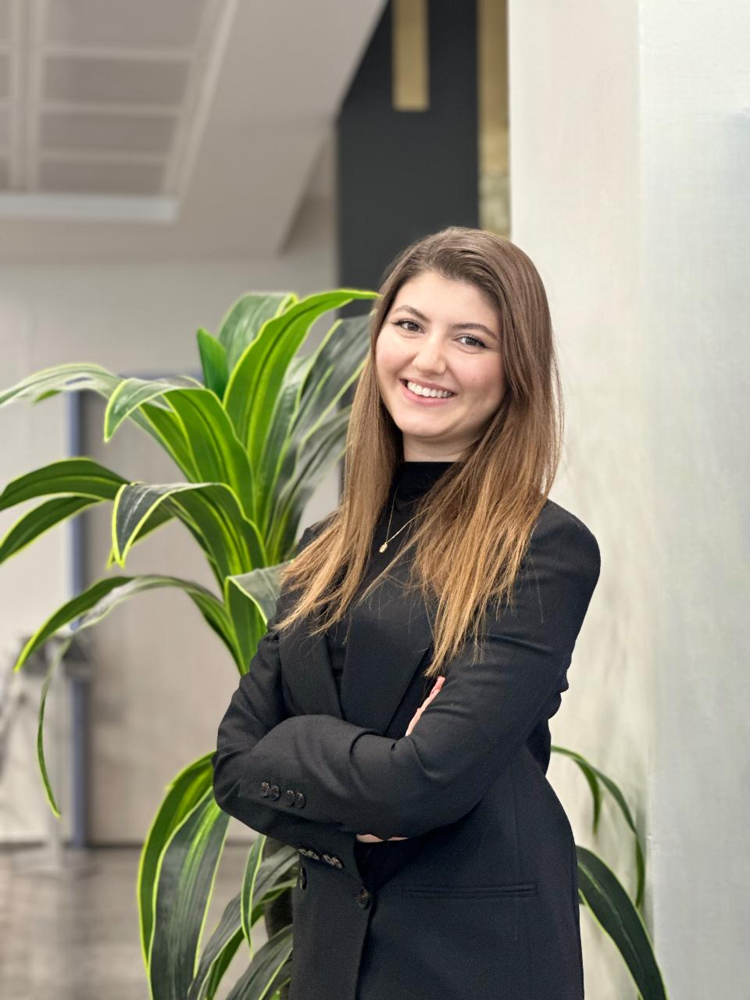

Bilgisayar Mühendisliği Öğrencisi

Kahramanmaraş Sütçü İmam Üniversitesi Bilgisayar Mühendisliği bölümü 4. sınıf öğrencisiyim. Yapay Zeka (özellikle Derin Öğrenme, NLP, Bilgisayarlı Görü), IoT ve Siber Güvenlik konularına büyük ilgi duyuyorum. Erasmus deneyimimle global bir bakış açısı kazandım ve akademik çalışmalarımı makaleleştirerek literatüre katkı sağlamayı hedefliyorum.
Technical University of Applied Sciences Augsburg / Almanya
Alınan Dersler: Applied Artificial Intelligence, Data Analytics, IT Sourcing and Cloud Transformation, Deutsch A.1.1
Kahramanmaraş Sütçü İmam Üniversitesi
GPA: 3.14/4.00 (İngilizce Hazırlık: 69.20/100)
İzmir Selma Yiğitalp Anadolu Lisesi
GPA: 84.76/100
Ankara, Türkiye
Java, SQL, Docker ve Git kullanarak backend ve veritabanı entegrasyonuna odaklanan bir Kütüphane Otomasyon Sistemi geliştirdim. Yazılım geliştirme süreçleri ve kodlama pratiklerinde deneyim kazandım.
DeBERTa ve Swin tabanlı multimodal (metin-görüntü) model kullanarak sosyal medya caps içeriklerinde nefret söylemi risk skorlaması yapan bir sistem geliştirdim ve akademik makale hazırladım.
Mininet, ONOS ve Open vSwitch kullanarak SDN test ortamı kurdum, Wireshark ile etiketli trafik veri seti oluşturdum ve LSTM/GRU modelleriyle %99,4 doğrulukla zero-day saldırı tespiti gerçekleştirdim.
Kamera tabanlı uyku hali tespiti (EAR) ve Arduino sensörleri (alkol, nabız, sıcaklık/nem) ile çalışan, gerçek zamanlı uyarı ve dinamik hız kontrolü sağlayan bir sistem geliştirdim.
VGG16, Inception V3 ve hibrit (ViT+LSTM) mimarilerini karşılaştırarak yüksek performanslı (%96.31) bir derin öğrenme modeli geliştirdim. Çalışma Gazi Üniversitesi dergisinde değerlendirme aşamasındadır.
ASP.NET tabanlı uygulamalar için Azure DevOps kullanarak uçtan uca CI/CD süreçlerini tasarladım; birim testlerinin otomatize edilmesi ve Dockerize edilmiş imajların Kubernetes ortamına dağıtımı süreçlerini yönettim.
İngilizce: B2 (Upper-Intermediate)
Almanca: A1 (Elementary)
Yönetim Kurulu Üyesi, Bilgisayar ve Bilişim Topluluğu (2022-2024)
Yönetim Ekibi Üyesi, Yapay Zeka Topluluğu (2025-Devam ediyor)
Gençlik ve Spor Bakanlığı Gönüllü Destek Görevlisi, (2025-Devam Ediyor)